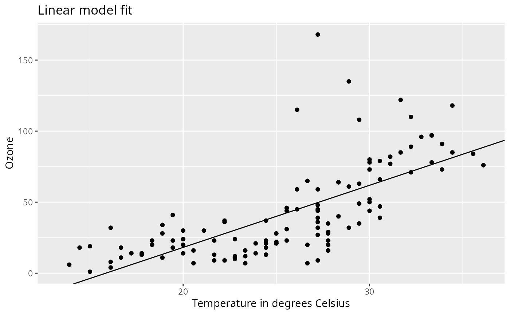
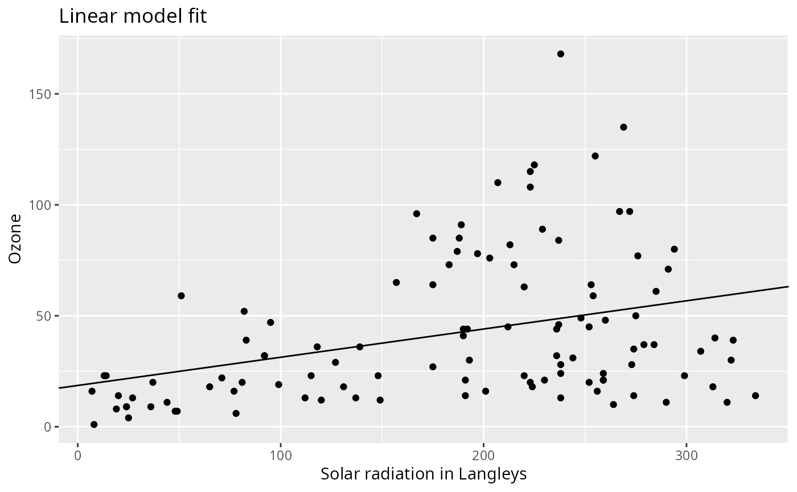
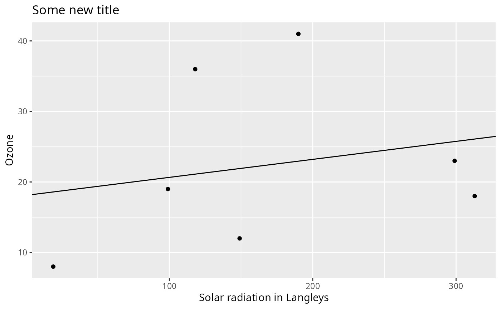

A simple example to get started
In this example, we’ll use base R’s airquality dataset.
head(airquality)
# Ozone Solar.R Wind Temp Month Day
# 1 41 190 7.4 67 5 1
# 2 36 118 8.0 72 5 2
# 3 12 149 12.6 74 5 3
# 4 18 313 11.5 62 5 4
# 5 NA NA 14.3 56 5 5
# 6 28 NA 14.9 66 5 6Our goal is to create an analysis pipeline that performs the following steps:
- add new data column
Temp.Celsiuscontaining the temperature in degrees Celsius - fit a linear model to the data
- plot the data and the model fit.
In the following, we’ll show how to define and run the pipeline, how to inspect the output of specific steps, and finally how to re-run the pipeline with different parameter settings, which is one of the selling points of using such a pipeline.
Pipeline building
For easier understanding, we go step by step. First, we create a new
pipeline with the name “my-pipeline” and add a data step
that provides the input dataset.
library(pipeflow)
pip <- pip_new("my-pip")
pip <- pip_add(pip,
step = "data",
fun = function(data = airquality) data
)For each step to add, at minimum we specify the name of the step and a function that defines what is computed in that step. Let’s take a first look at the pipeline.
pip
# <pipeflow_pip> my-pip (1 step)
# ------------------------------
# step depends out state
# 1: data [NULL] newHere, each step is represented by one row in the table as denoted in
the first column. The depends column lists the dependencies
of a step, which is empty for the data step since it does
not depend on any other step (more on dependencies later). The
out column will eventually contain the output of the step,
which is currently NULL since we haven’t run the pipeline
yet, and the state column shows the current, which
initially is new for all steps.
Next, we add a step called data_prep, which consists of
a function that takes the output of the data step as its
first argument, adds a new column and returns the modified data as its
output. To refer to the output of an earlier pipeline step, we just
write the name of the step preceded with the tilde (~) operator, that
is, ~data in this case.
Since pip_add works “by reference”, we can add the step
as follows:
pip |> pip_add(
"data_prep",
function(x = ~data) {
replace(x, "Temp.Celsius", (x[, "Temp"] - 32) * 5 / 9)
}
)So, a second step called data_prep was added and it
depends on the data step as now visible in column
depends.
Next, we want to add a step called model_fit that fits a
linear model to the data. The function takes the output of the
data_prep and defines a parameter xVar, which
is used to specify the variable that is used as predictor in the linear
model.
pip |> pip_add(
"model_fit",
function(
data = ~data_prep,
xVar = "Temp.Celsius"
) {
lm(paste("Ozone ~", xVar), data = data)
}
)
pip
# <pipeflow_pip> my-pip (3 steps)
# -------------------------------
# step depends out state
# 1: data [NULL] new
# 2: data_prep data [NULL] new
# 3: model_fit data_prep [NULL] newLastly, we add a step called model_plot, which plots the
data and the linear model fit. The function uses the output from both
the model_fit and data_prep step. It also
defines the xVar parameter and a parameter
title, which is used as the title of the plot.
pip |> pip_add(
"model_plot",
function(
model = ~model_fit,
data = ~data_prep,
xVar = "Temp.Celsius",
xLab = "Temperature in degrees Celsius",
title = "Linear model fit"
) {
require(ggplot2, quietly = TRUE)
coeffs <- coefficients(model)
ggplot(data) +
geom_point(aes(.data[[xVar]], .data[["Ozone"]])) +
geom_abline(intercept = coeffs[1], slope = coeffs[2]) +
labs(title = title, x = xLab)
}
)
pip
# <pipeflow_pip> my-pip (4 steps)
# -------------------------------
# step depends out state
# 1: data [NULL] new
# 2: data_prep data [NULL] new
# 3: model_fit data_prep [NULL] new
# 4: model_plot model_fit,data_prep [NULL] newIn the last line, we see that the model_plot step
depends on both the model_fit and data_prep
step.
In addition to the tabular output, {pipeflow} also provides a
graphical representation that is compatible with the
visNetwork package. In particular, the
pip_get_graph() function returns a list of arguments that
can be feed directly to visNetwork::visNetwork().
library(visNetwork)
do.call(visNetwork, args = pip_get_graph(pip)) |>
visHierarchicalLayout(direction = "LR")Here, the pipeline is visualized as a directed acyclic graph (DAG) where the nodes represent the steps and the edges represent the dependencies.
Pipeline integrity
A key feature of {pipeflow} is that the integrity of a pipeline is
verified at definition time. To see this, let’s try to add another step
that is referring to a non-existent step foo as its
input.
pip |> pip_add(
"another_step",
function(data = ~foo) {
data
}
)
# Error:
# ! while adding step 'another_step' - cannot reference unknown steps: 'foo'{pipeflow} immediately signals an error and the pipeline remains unchanged.
pip
# <pipeflow_pip> my-pip (4 steps)
# -------------------------------
# step depends out state
# 1: data [NULL] new
# 2: data_prep data [NULL] new
# 3: model_fit data_prep [NULL] new
# 4: model_plot model_fit,data_prep [NULL] newPipeline run and output
To run the pipeline, we simply call pip_run(), which
produces the following output:
pip_run(pip)
# info [2026-06-13 17:22:43.841 UTC]: Start run of pipeflow_pip 'my-pip'
# info [2026-06-13 17:22:43.841 UTC]: Step 1/4 data
# info [2026-06-13 17:22:43.843 UTC]: Step 2/4 data_prep
# info [2026-06-13 17:22:43.845 UTC]: Step 3/4 model_fit
# info [2026-06-13 17:22:43.848 UTC]: Step 4/4 model_plot
# info [2026-06-13 17:22:44.299 UTC]: Finished run of pipeflow_pip 'my-pip'Let’s inspect the pipeline again.
pip
# <pipeflow_pip> my-pip (4 steps)
# -------------------------------
# step depends out state
# 1: data <data.frame[153x6]> done
# 2: data_prep data <data.frame[153x7]> done
# 3: model_fit data_prep <lm[13]> done
# 4: model_plot model_fit,data_prep <ggplot2::ggplot> doneWe can see that the state of all steps have been changed
from new to done, which graphically is
represented by the color change from blue to green.
In addition, the output was added in the out column. To
access a specific entry of the pipeline, we just select the row (aka
step) and column of pipeline table via the [[ operator. For
example, to inspect the output of the
model_fit and model_plot steps, we do:
pip[["model_fit", "out"]]
#
# Call:
# lm(formula = paste("Ozone ~", xVar), data = data)
#
# Coefficients:
# (Intercept) Temp.Celsius
# -69.277 4.372
pip[["model_plot", "out"]]
Pipeline parameters
Even for a moderately complex analysis consisting of, say, 15 to 20 different functions, keeping track of all the different analysis parameters can quickly get out of hand.
As we will see, with {pipeflow} this becomes much easier, since the
pipeline itself keeps track of all parameters and their values. Let’s
first inspect the parameters of the above defined pipeline using the
pip_get_params() function.
pip_get_params(pip) |> str()
# List of 4
# $ data :'data.frame': 153 obs. of 6 variables:
# ..$ Ozone : int [1:153] 41 36 12 18 NA 28 23 19 8 NA ...
# ..$ Solar.R: int [1:153] 190 118 149 313 NA NA 299 99 19 194 ...
# ..$ Wind : num [1:153] 7.4 8 12.6 11.5 14.3 14.9 8.6 13.8 20.1 8.6 ...
# ..$ Temp : int [1:153] 67 72 74 62 56 66 65 59 61 69 ...
# ..$ Month : int [1:153] 5 5 5 5 5 5 5 5 5 5 ...
# ..$ Day : int [1:153] 1 2 3 4 5 6 7 8 9 10 ...
# $ xVar : chr "Temp.Celsius"
# $ xLab : chr "Temperature in degrees Celsius"
# $ title: chr "Linear model fit"It returns a list of all independent parameters (here
data, xVar, and title). By
independent we mean that these parameters don’t depend on other
steps (i.e. steps defined with the ~ operator). This is
important as you never want to mess with parameters defined in terms of
other steps.
Furthermore, each parameter is only listed once, even if it is used
in multiple steps1. To change any independent parameter, we
simply call pip_set_params():
pip |>
pip_set_params(list(xVar = "Solar.R", xLab = "Solar radiation in Langleys"))
pip_get_params(pip) |> str()
# List of 4
# $ data :'data.frame': 153 obs. of 6 variables:
# ..$ Ozone : int [1:153] 41 36 12 18 NA 28 23 19 8 NA ...
# ..$ Solar.R: int [1:153] 190 118 149 313 NA NA 299 99 19 194 ...
# ..$ Wind : num [1:153] 7.4 8 12.6 11.5 14.3 14.9 8.6 13.8 20.1 8.6 ...
# ..$ Temp : int [1:153] 67 72 74 62 56 66 65 59 61 69 ...
# ..$ Month : int [1:153] 5 5 5 5 5 5 5 5 5 5 ...
# ..$ Day : int [1:153] 1 2 3 4 5 6 7 8 9 10 ...
# $ xVar : chr "Solar.R"
# $ xLab : chr "Solar radiation in Langleys"
# $ title: chr "Linear model fit"{pipeflow} automatically propagates the parameter change to all steps
that use the respective parameter. In addition, it will recognize which
steps are affected by the parameter change and mark them as
outdated.
pip
# <pipeflow_pip> my-pip (4 steps)
# -------------------------------
# step depends out state
# 1: data <data.frame[153x6]> done
# 2: data_prep data <data.frame[153x7]> done
# 3: model_fit data_prep <lm[13]> outdated
# 4: model_plot model_fit,data_prep <ggplot2::ggplot> outdatedWe can see that the model_fit and
model_plot steps are now in state outdated
(graphically indicated by the orange color). To update the results, we
just run the pipeline again.
pip_run(pip)
# info [2026-06-13 17:22:45.267 UTC]: Start run of pipeflow_pip 'my-pip'
# info [2026-06-13 17:22:45.268 UTC]: Step 1/4 data - skipping done step
# info [2026-06-13 17:22:45.268 UTC]: Step 2/4 data_prep - skipping done step
# info [2026-06-13 17:22:45.268 UTC]: Step 3/4 model_fit
# info [2026-06-13 17:22:45.272 UTC]: Step 4/4 model_plot
# info [2026-06-13 17:22:45.290 UTC]: Finished run of pipeflow_pip 'my-pip'The outdated steps were re-run as expected and the output was updated
accordingly now showing the new x-variable Solar.R.
pip[["model_plot", "out"]]
A closer look at the run log shows that the pipeline skipped the
first two steps and ran only the steps that were outdated, which
basically can be thought of caching or mimicking the behavior of
make in software development. That is, {pipeflow} always
keeps track of which steps are outdated and only re-runs those steps and
their downstream dependencies, which can be a huge time saver for larger
pipelines2.
Let’s visit some more examples of parameter changes and their effects
on the pipeline. To just change the title of the plot, only the
model_plot step needs to be rerun.
pip |> pip_set_params(list(title = "Some new title"))
pip
# <pipeflow_pip> my-pip (4 steps)
# -------------------------------
# step depends out state
# 1: data <data.frame[153x6]> done
# 2: data_prep data <data.frame[153x7]> done
# 3: model_fit data_prep <lm[13]> done
# 4: model_plot model_fit,data_prep <ggplot2::ggplot> outdated
pip_run(pip)
# info [2026-06-13 17:22:45.715 UTC]: Start run of pipeflow_pip 'my-pip'
# info [2026-06-13 17:22:45.715 UTC]: Step 1/4 data - skipping done step
# info [2026-06-13 17:22:45.715 UTC]: Step 2/4 data_prep - skipping done step
# info [2026-06-13 17:22:45.715 UTC]: Step 3/4 model_fit - skipping done step
# info [2026-06-13 17:22:45.715 UTC]: Step 4/4 model_plot
# info [2026-06-13 17:22:45.726 UTC]: Finished run of pipeflow_pip 'my-pip'
pip[["model_plot", "out"]]Once we change the input data parameter from the data
step, since all other steps depend on it, we expect all steps to be
rerun.
small_airquality <- airquality[1:10, ]
pip |> pip_set_params(list(data = small_airquality))
pip
# <pipeflow_pip> my-pip (4 steps)
# -------------------------------
# step depends out state
# 1: data <data.frame[153x6]> outdated
# 2: data_prep data <data.frame[153x7]> outdated
# 3: model_fit data_prep <lm[13]> outdated
# 4: model_plot model_fit,data_prep <ggplot2::ggplot> outdated
pip_run(pip)
# info [2026-06-13 17:22:46.070 UTC]: Start run of pipeflow_pip 'my-pip'
# info [2026-06-13 17:22:46.070 UTC]: Step 1/4 data
# info [2026-06-13 17:22:46.072 UTC]: Step 2/4 data_prep
# info [2026-06-13 17:22:46.077 UTC]: Step 3/4 model_fit
# info [2026-06-13 17:22:46.079 UTC]: Step 4/4 model_plot
# info [2026-06-13 17:22:46.089 UTC]: Finished run of pipeflow_pip 'my-pip'
pip[["model_plot", "out"]]
Last but not least let’s try to set parameters that don’t exist in the pipeline, which mostly happens due to accidental misspells.
pip |> pip_set_params(list(titel = "misspelled variable name", foo = "my foo"))
# Warning in pip_set_params(pip, list(titel = "misspelled variable name", : Trying to set parameters
# not defined in the target: titel, fooAs you see, a warning is given to the user hinting at the respective parameter names, which makes fixing any misspells straight-forward.
Next, let’s see how to modify the pipeline.